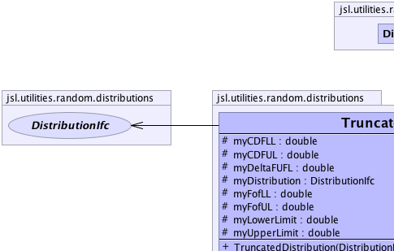
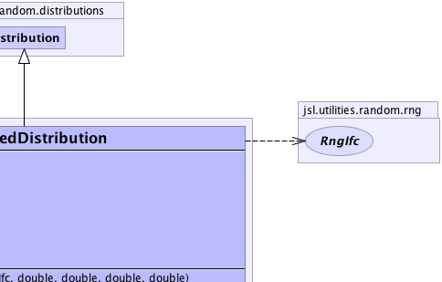
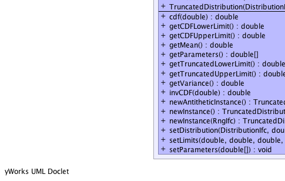
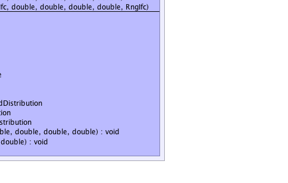

jsl.utilities.random.AbstractRandom
jsl.utilities.random.distributions.Distribution
jsl.utilities.random.distributions.TruncatedDistribution
jsl.utilities.random.AbstractRandom
jsl.utilities.random.distributions.Distribution
jsl.utilities.random.distributions.TruncatedDistribution
|
||||||||||
| PREV CLASS NEXT CLASS | FRAMES NO FRAMES | |||||||||
| SUMMARY: NESTED | FIELD | CONSTR | METHOD | DETAIL: FIELD | CONSTR | METHOD | |||||||||
java.lang.Object
public class TruncatedDistribution
|  |  |
|  |  |
| Nested Class Summary |
|---|
| Nested classes/interfaces inherited from class jsl.utilities.random.AbstractRandom |
|---|
AbstractRandom.RandomControls |
| Field Summary | |
|---|---|
protected double |
myCDFLL
|
protected double |
myCDFUL
|
protected double |
myDeltaFUFL
|
protected DistributionIfc |
myDistribution
|
protected double |
myFofLL
|
protected double |
myFofUL
|
protected double |
myLowerLimit
|
protected double |
myUpperLimit
|
| Fields inherited from class jsl.utilities.random.distributions.Distribution |
|---|
myRNG |
| Fields inherited from class jsl.utilities.random.AbstractRandom |
|---|
myId, myName |
| Constructor Summary | |
|---|---|
TruncatedDistribution(DistributionIfc distribution,
double cdfLL,
double cdfUL,
double truncLL,
double truncUL)
Constructs a truncated distribution based on the provided distribution |
|
TruncatedDistribution(DistributionIfc distribution,
double cdfLL,
double cdfUL,
double truncLL,
double truncUL,
RngIfc rng)
Constructs a truncated distribution based on the provided distribution |
|
| Method Summary | |
|---|---|
double |
cdf(double x)
Returns the F(x) = Pr{X <= x} where F represents the cumulative distribution function |
double |
getCDFLowerLimit()
The CDF's original lower limit |
double |
getCDFUpperLimit()
The CDF's original upper limit |
double |
getMean()
Returns the mean or expected value of a distribution |
double[] |
getParameters()
Get the parameters for the truncated distribution cdfLL = parameter[0] cdfUL = parameters[1] truncLL = parameters[2] truncUL = parameters[3] any other values in the array should be interpreted as the parameters for the underlying distribution |
double |
getTruncatedLowerLimit()
The lower limit for the truncated distribution |
double |
getTruncatedUpperLimit()
The upper limit for the trunctated distribution |
double |
getVariance()
Returns the variance of the distribution if defined |
double |
invCDF(double p)
Provides the inverse cumulative distribution function for the distribution While closed form solutions for the inverse cdf may not exist, numerical search methods can be used to solve F(X) = U. |
TruncatedDistribution |
newAntitheticInstance()
Returns a new instance that will supply values based on antithetic U(0,1) when compared to this distribution |
TruncatedDistribution |
newInstance()
Returns a new instance of the random source with the same parameters but an independent generator |
TruncatedDistribution |
newInstance(RngIfc rng)
Returns a new instance of the random source with the same parameters but an independent generator |
void |
setDistribution(DistributionIfc distribution,
double cdfLL,
double cdfUL,
double truncLL,
double truncUL)
|
void |
setLimits(double cdfLL,
double cdfUL,
double truncLL,
double truncUL)
|
void |
setParameters(double[] parameters)
Sets the parameters of the truncated distribution cdfLL = parameter[0] cdfUL = parameters[1] truncLL = parameters[2] truncUL = parameters[3] any other values in the array should be interpreted as the parameters for the underlying distribution |
| Methods inherited from class jsl.utilities.random.distributions.Distribution |
|---|
advanceToNextSubstream, cdf, complementaryCDF, getAntitheticOption, getAntitheticValue, getRandomNumberGenerator, getStandardDeviation, getValue, inverseContinuousCDFViaBisection, inverseContinuousCDFViaBisection, inverseDiscreteCDFViaSearchUp, resetStartStream, resetStartSubstream, setAntitheticOption, setRandomNumberGenerator, toString |
| Methods inherited from class jsl.utilities.random.AbstractRandom |
|---|
getId, getName, getSample, getSample, makeControls, setControls, setId, setName |
| Methods inherited from class java.lang.Object |
|---|
clone, equals, finalize, getClass, hashCode, notify, notifyAll, wait, wait, wait |
| Methods inherited from interface jsl.utilities.random.SampleIfc |
|---|
getSample, getSample |
| Field Detail |
|---|
protected DistributionIfc myDistribution
protected double myLowerLimit
protected double myUpperLimit
protected double myCDFLL
protected double myCDFUL
protected double myFofLL
protected double myFofUL
protected double myDeltaFUFL
| Constructor Detail |
|---|
public TruncatedDistribution(DistributionIfc distribution,
double cdfLL,
double cdfUL,
double truncLL,
double truncUL)
distribution - cdfLL - The lower limit of the range of support of the distributioncdfUL - The upper limit of the range of support of the distributiontruncLL - The truncated lower limit (if moved in from cdfLL), must be >= cdfLLtruncUL - The truncated upper limit (if moved in from cdfUL), must be <= cdfUL
public TruncatedDistribution(DistributionIfc distribution,
double cdfLL,
double cdfUL,
double truncLL,
double truncUL,
RngIfc rng)
distribution - cdfLL - The lower limit of the range of support of the distributioncdfUL - The upper limit of the range of support of the distributiontruncLL - The truncated lower limit (if moved in from cdfLL), must be >= cdfLLtruncUL - The truncated upper limit (if moved in from cdfUL), must be <= cdfULrng - | Method Detail |
|---|
public final TruncatedDistribution newInstance()
newInstance in interface NewInstanceIfcnewInstance in interface RandomIfcnewInstance in class Distributionpublic final TruncatedDistribution newInstance(RngIfc rng)
newInstance in interface RandomIfcnewInstance in class Distributionpublic final TruncatedDistribution newAntitheticInstance()
newAntitheticInstance in class Distribution
public final void setDistribution(DistributionIfc distribution,
double cdfLL,
double cdfUL,
double truncLL,
double truncUL)
public final void setLimits(double cdfLL,
double cdfUL,
double truncLL,
double truncUL)
public final void setParameters(double[] parameters)
parameters - an array of doubles representing the parameterspublic final double[] getParameters()
public final double getCDFLowerLimit()
public final double getCDFUpperLimit()
public final double getTruncatedLowerLimit()
public final double getTruncatedUpperLimit()
public final double cdf(double x)
CDFIfc
x - a double representing the upper limit
public final double getMean()
MeanIfc
public final double getVariance()
VarianceIfc
public double invCDF(double p)
CDFIfc
p - The probability to be evaluated for the inverse, p must be [0,1] or
an IllegalArgumentException is thrown
|
||||||||||
| PREV CLASS NEXT CLASS | FRAMES NO FRAMES | |||||||||
| SUMMARY: NESTED | FIELD | CONSTR | METHOD | DETAIL: FIELD | CONSTR | METHOD | |||||||||